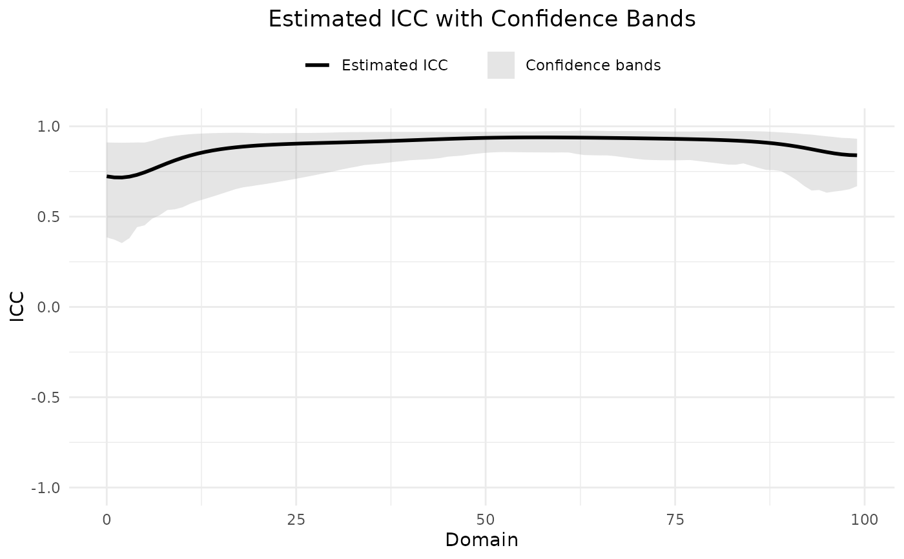

Plot ICC with Simultaneous Confidence Bands
plot_ICC.RdThis function generates a plot of the estimated ICC with simultaneous confidence bands based on Rank method.
Usage
plot_ICC(
conf_sets_output,
estimated_ICC_color = "black",
bands_color = "darkgrey",
plot_title = "Estimated ICC with Confidence Bands",
xlable = "Domain",
ylable = "ICC",
plot_legend_position = "top"
)Arguments
- conf_sets_output
The output of Conf_sets function when it the type = "Rank".
- estimated_ICC_color
The color of the estimated ICC line. The default value is "black".
- bands_color
The color of the confidence bands shaded area. The default value is "darkgrey".
- plot_title
The title of the plot. The default value is "Estimated ICC with Confidence Bands", it could be "" for having no title.
- xlable
The x-axis label. The default value is "Domain".
- ylable
The y-axis label. The default value is "ICC".
- plot_legend_position
The position of the legend. The default value is "top". it could be "none" for having no legend.
Examples
# The package contains the datasets, TEST_data, and RETEST_data which are the
#test and retest data, respectively.
set.seed(123)
confsets_outputs <- Conf_sets(test = TEST_data, retest = RETEST_data,
type = c("Rank", "Normal"), n_boot=1000,
designation = "ICC(A,1)", alpha = 0.05)
plot_ICC(confsets_outputs, estimated_ICC_color = "black",
bands_color = "darkgrey",
plot_title = "Estimated ICC with Confidence Bands",
xlable = "Domain", ylable = "ICC",
plot_legend_position = "top")
